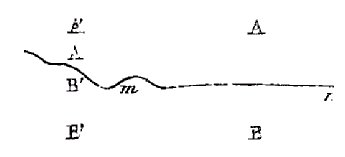

ETUDES SUR LE MÉTAMORPHISME DES ROCHES Plan : métamorphisme général dans des roches quelconques - métamorphisme général au contact de deux roches - intensité du métamorphisme général - association des roches métamorphiques - passage des roches métamorphiques aux roches plutoniques - les roches plutoniques sont l'effet et non la cause du métamorphisme -PAR M. DELESSE.

revu le 27 juillet 2003
MÉTAMORPHISME GÉNÉRAL DANS DES ROCHES QUELCONQUES.
Jusqu'à présent nous avons étudié le métamorphisme général dans les roches les plus importantes et les plus répandues; mais la composition des roches n'est pas toujours aussi simple que nous l'avons supposé : car, d'une part, les roches stratifiées se mélangent entre elles en toutes proportions; d'autre part, les roches stratifiées et éruptives se mélangent avec les roches anormales, notamment avec celles qui sont métallifères. Proposons-nous donc de rechercher ce que deviendront ces roches complexes lorsqu'elles seront soumises au métamorphisme général. L'oxyde de fer, par exemple, qui est si commun dans la nature, se mélange avec un très-grand nombre de roches, et il est facile de comprendre que la composition de ces dernières doit nécessairement exercer beaucoup d'influence sur son métamorphisme. Lorsqu'il est avec le calcaire, l'oxyde de fer est généralement
réduit à l'état de fer oxydulé. Les mines de fer magnétique de la Scandinavie en offrent de nombreux exemples, et le calcaire saccharoïde peut être considéré comme l'un des principaux gisements de ce minerai. Avec une roche contenant de la silice, l'oxyde de fer se change souvent en fer oligiste, comme on l'observe dans le quartzite, le micaschiste, et surtout dans le sidéroschiste, l'itabirite, l'itacolumite; mais il se change aussi en fer oxydulé, surtout dans les roches qui, indépendamment de la silice, contiennent de la magnésie. Ainsi, le schiste talqueux, le schiste chlorité, le schiste serpentineux, le schisie amphibolique, sont très-riches en fer
oxydulé. Le micaschiste, le gneiss, la syénite, le granit en renferment également.
Très fréquemment l'oxyde de fer se combine avec la silice; il forme alors des silicates dans lesquels il est à l'état de protoxyde ou de sesquioxyde. Ces silicates sont généralement le pyroxène, l'amphibole, le grenat, l'idocrase, l'épidote, l'iénite, la chlorite, le talc, la serpentine, le mica. Le métal considéré peut être encaissé dans des roches très diverses, et leur nature exercera nécessairement de l'influence sur son métamorphisme. Cette influence sera surtout très grande
lorsqu'il aura de l'affinité pour la silice, comme le fer, le manganèse, le zinc, le titane; car il donnera des bases puissantes, et, comme presque toutes les roches renferment de la silice, ii tendra à produire des silicates quand le métamorphisme sera suffisamment énergique. Lorsqu'au contraire le métal aura peu ou point d'affinité pour la silice, comme le platine, l'or, l'argent, le mercure, le plomb,
l'uranium, l'étain, le tungstène, il restera généralement à l'état sous lequel il s'est formé d'abord dans chaque gîte métallifère. Les roches éruptives proprement dites consistent essentiellement en silicates, et c'est surtout quand elles auront une origine volcanique qu'elles seront métamorphosées. Elles présentent souvent des passages entre elles; mais leurs variétés, d'ailleurs très nombreuses, se comporteront comme les termes extrêmes entre lesquels elles se trouvent comprises. Si les couches de combustibles intercalées dans les terrains
sont assez rares, il n'est pas de roche stratifiée qui ne contienne de petites quantités de matières organiques. Un essai très simple suffit pour s'en assurer; car quand on chauffe une roche stratifiée dans un tube, la matière organique se révèle de suite par son odeur, par un dégagement d'ammoniaque qui ramène au bleu le
papier de tournesol rougi, quelquefois même par la distillation d'une petite quantité de bitume. Or, lorsque cette roche, calcaire, grès ou argile, est soumise au métamorphisme général, la matière organique est décomposée, et son carbone peut même cristalliser sous forme de graphite. Telle est l'origine du graphite qu'on trouve disséminé dans le calcaire saccharoïde, le quartzite, le schiste micacé, le micaschiste, le gneiss, et même dans le granit. La présence du graphite dans ces roches, qui contiennent du fer à l'état d'oxyde et de silicates, montre bien que le métamorphisme général n'a pas eu lieu par fusion et à une température élevée; autrement le carbone aurait été oxydé et le fer réduit à l'état métallique.
Les calcaires sont extrêmement répandus dans les terrains stratifiés, et la plupart des roches en renferment au moins de petites quantités. Sous l'influence du métamorphisme, ces calcaires prennent une structure cristalline. En outre leurs bases, la chaux, la magnésie, l'oxyde de fer peuvent se combiner avec la silice et
former des silicates : il est facile, par exemple, de le constater sur le calcaire qui est enclavé dans les roches métamorphiques; car au contact se montrent surtout des silicates dont le calcaire a fourni les bases, notamment le pyroxène, l'amphibole le grenat, l'idocrase, l'épidote. L'argile et l'argilite se rencontrent également en petite quantité dans la plupart des roches stratifiées; il y en a dans les roches calcaires, siliceuses, ainsi que dans les gypses et dans les combustibles. La silice, l'alumine, l'oxyde de fer, la chaux, la magnésie et les alcalis se retrouvent, en définitive, dans presque toutes les roches; par conséquent, des minéraux très-variés, et en particu-
lier les feldspaths, peuvent s'y développer sous l'influence du métamorphisme général. Enfin les roches stratifiées renferment assez souvent de petites
quantités de chlorures, de fluorures, de sulfates, de phosphates, de borates. Ces substances y ont été introduites par des roches anormales, ou bien elles proviennent de la destruction de roches préexistantes; elles s'observent aussi dans les roches éruptives, qu'elles soient volcaniques ou plutoniques. Si l'on suppose que toutes ces roches soient soumises au métamorphisme général, leur structure cristalline tendra à se développer; il pourra même se former des minéraux contenant ces différentes substances. Le chlore entrera dans la sodalite et l'apatite; le fluor dans le spath
fluor, la topaze, l'apatite, la condrodite, le mica; le soufre dans la pyrite de fer, les sulfures, le lapis-lazuli ; le phosphore dans l'apatite et les phosphates; le bore dans la tourmaline et l'axinite. Ces divers minéraux sont d'ailleurs fréquents dans les roches métamorphiques, et leur présence s'explique facilement; car les substances exceptionnelles qui sont nécessaires à leur développement peuvent se trouver en petits quantité dans toute espèce de roches.MÉTAMORPHISME GÉNÉRAL AU CONTACT DE DEUX ROCHES
Lorsqu'un terrain est soumis au métamorphisme général, les différentes roches, éruptives ou stratifiées, qui le composent éprouvent des métamorphoses qui ont été étudiées successivement pour chacune d'elles; mais, au contact de ces roches, il s'opère en même temps des métamorphoses spéciales et très complexes, qui tiennent à leur réaction mutuelle. Ces dernières métamorphoses s'observent quels que soient la nature et le mode de gisement des deux roches en contact. Considérons, par exemple, le gneiss et le calcaire saccharoïde. D'après les développements qui ont été donnés précédemment, ces roches peuvent être considérées l'une et l'autre comme métamorphiques. Mais, près du contact, leur composition minéralogique se modifie généralement. Ainsi le calcaire renferme-
souvent des silicates variés, tels que le pyroxène, l'amphibole, la wollastonite, le grenat, l'idocrase, l'épidote, la serpentine, la chlorite, le talc, la pyrosklérite, le feldspath, les micas, et quelquefois aussi le quartz. Les mêmes minéraux se sont également développés, jusqu'à une certaine distance, dans le gneiss. Dans chacune de ces roches et vers leur limite, on voit donc apparaître des minéraux qui proviennent de leur réaction mutuelle. Des phénomènes semblables s'observent au, contact des roches stratifiées, calcaires, siliceuses, argileuses, lorsqu'elles ont été
soumises au métamorphisme général. Ils s'observent aussi au contact d'une roche éruptive intercalée dans des roches stratifiées. Par exemple, au contact d'un filon de diorite avec le calcaire saccharoïde on retrouverait les minéraux déjà signalés, qui résultent de la réaction du calcaire sur les roches silicatées. C'est surtout au contact des roches anormales, et spécialement de celles qui sont métallifères, que se formeront les minéraux les plus variés. Les roches métallifères de l'île d'Elbe et de la Scandinavie en offrent des exemples remarquables: elles renferment, en effet, la plupart des substances métalliques, et elles trouvent généralement dans les roches contiguës les substances qui leur manquent, c'est-à-dire la silice et les bases qui l'accompagnent; en sorte que presque toutes les substances connues sont en présence. D'un autre côté, comme les minéraux ont une grande tendance à se développer sous l'influence du métamorphisme général, il n'est pas étonnant qu'il se produise, au contact des roches métallifères, des silicates, des carbonates, des phosphates, des sulfates, des oxydes, des fluorures, des sulfures, des arséniures, des antimoniures, c'est-à-dire les principaux minéraux.
Les silicates, et particulièrement ceux qui ont pour types le pyroxène et le grenat, sont toutefois les minéraux les plus fréquents. Les éléments nécessaires à leur formation se retrouvent d'ailleurs dans la plupart des roches, particulièrement lorsque l'une d'elles est silicatée, et l'autre calcaire. Ces silicates se développent également dans le métamorphisme de contact, lorsque la roche éruptive exerce une action énergique sur la roche encaissante [Delesse : Etudes sur le métamorphisme des roches, 1858, p. 124, etc.]. Bien que les circonstances soient alors différentes, les mêmes éléments se retrouvent en présence, il n'est donc pas étonnant que les actions moléculaires aient engendré les mêmes minéraux. Un diagramme permet de résumer très simplement le métamorphisme au contact de deux roches quelconques. (Voir la figure.)
FIGURE I
(métamorphisme au contact de deux roches)Soient A et B les deux roches normales qui sont en contact suivant la ligne m n. Dans les parties où elles seront soumises au métamorphisme général; elles éprouveront d'abord des métamorphoses qui les changeront en A' et B'. En outre, près du contact, elles éprouveront des métamorphoses spéciales qui seront différentes des premières, et les changeront en A" et B". Les roches nouvelles A'A", B'B" qui se formeront dépendront d'ailleurs de la composition des roches élémentaires et de l'intensité du métamorphisme. Les minéraux qui se développent près du contact sont très variés, surtout lorsque l'une des roches est anormale ou métallifère : mais plusieurs de ces minéraux se forment aussi par le métamorphisme de contact, et ont déjà été signalés à la limite de la roche éruptive avec la roche encaissante.
INTENSITE DU MÉTAMORPHISME GÉNERAL.
Lorsqu'une roche est soumise au métamorphisme, elle prend des caractères nouveaux. Ces caractères diffèrent d'autant plus de ceux qu'elle avait d'abord, que le métamorphisme a été plus énergique. La comparaison d'une roche à l'état normal et à l'état métamorphique peut donc servir à mesurer l'intensité du métamorphisme. Dans l'étude du métamorphisme général, j'ai cherché à ordon-
ner les roches de chaque famille relativement à cette intensité; et, pour certaines familles, il est très facile de suivre ses progrès successifs. Ainsi, dans les gîtes métallifères, l'hydroxyde de fer se change en fer oligiste ou en fer oxydulé, puis en silicates. Des métamorphoses analogues ont lieu dans les minerais de manganèse et de zinc. Les combustibles présentent surtout une série très nette, dont les principaux termes sont le lignite, la houille, l'anthracite, le graphite. Le calcaire, la dolomie, le carbonate de magnésie, deviennent de plus en plus cristallins, et passent, en définitive, à l'état de marbre blanc ou de carbonate saccharoïde.
Le grès se métamorphose en quartzite ou en micaschiste. L'argile magnésienne peut donner du schiste talqueux, serpentineux et chlorité, ou bien du pyroxène et du grenat. L'argilite se change en schiste ardoisier, micacé, hornblendé et
feldspathique ; certaines variétés passent même au gneiss. Chaque roche donne donc une série de dérivés qui représentent les différents degrés et en quelque sorte les étapes du métamorphisme. Les caractères nouveaux qu'elle prend dépendent entièrement de sa nature et de sa composition originaire. Généralement sa densité et sa structure cristalline vont successivement en augmentant. Au contraire, l'eau, les matières bitumineuses et volatiles tendent à diminuer; toutefois, l'acide carbonique et l'eau se retrouvent, même dans les roches qui ont subi le métamor-
phisme le plus énergique. Le maximum d'intensité paraît, d'ailleurs, correspondre à une structure cristalline très développée. Il se forme alors des minéraux variés, des micas, du pyroxène, de l'amphibole, du grenat, de la serpentine, de la chlorité, du talc, de la pyrosklérite, des feldspaths et même du quartz.ASSOCIATION DES ROCHES MÉTAMORPHIQUES.
Les roches métamorphiques sont toujours groupées entre elles d'une manière remarquable, et il importe de faire connaître les lois de leur association. D'abord, lorsque le métamorphisme général s'est exercé sur un ensemble de roches, il n'en est aucune qui ait échappé à son action. Si, par exemple, on trouve dans un gisement une roche normale à côté d'une roche métamorphique, il faut l'attribuer à
ce que la première est postérieure à la seconde. Des failles ou des renversements peuvent également mettre en contact une roche normale et une roche métamorphique. Mais, hormis ces cas exceptionnels, quand une roche a été métamorphosée, toutes celles qui l'accompagnent le sont également. On pourrait nommer roches métamorphiques correspondantes celles qui se montrent habituelle ment associées. Elles représentent les effets d'un même métamorphisme sur diverses roches. Elles s'observent surtout très-bien dans les terrains stratifiés qui conservent la trace des couches originaires, même après le métamorphisme
le plus énergique. Le graphite, le calcaire saccharoïde, le micaschiste, le gneiss, nous offrent un exemple de roches métamorphiques correspondantes.
Jusqu'à présent nous avons considéré les roches métamorphiques sur un même point; mais transportons-nous en des points différents, de plus en plus rapprochés d'un centre de métamorphisme, l'intensité ira successivement en augmentant; les roches, d'abord à l'état normal, s'altéreront peu à peu; leur structure deviendra plus cristalline, et il se formera de nouveaux minéraux; partout, d'ailleurs, se retrouveront des roches métamorphiques correspondantes. Ce métamorphisme a eu lieu sur une grande échelle, et même le plus souvent sur plusieurs kilomètres d'étendue. Il a frappé tous les observateurs. Il est surtout bien visible dans les roches stratifiées siliceuses ou argileuses. En effet, ces dernières roches ne sont pas entièrement décomposées par le métamorphisme, comme le sont quelquefois les roches calcaires; elles conservent au moins des traces de leur stratification, même lorsque l'action a été très énergique; elles se changent alors en schistes cristallins, qui constituent par excellence les roches métamorphiques. Les roches stratifiées qui ont subi le métamorphisme général s'observent dans la plupart des régions granitiques. Le Grosskogel, en Styrie, qui dépasse 1400 mètres de hauteur, donne un exemple assez net de la succession des roches métamorphiques [Rolle : Jahrbuch der K. K. geologischen Reichsanstalt, 1857, VII, 287]. Les roches y forment des zones concentriques autour d'un noyau de granit qui présente la forme d'une ellipse. Les
schistes cristallins sont les plus rapprochés de ce granit; ils présentent d'abord du gneiss, auquel est associé du calcaire saccharoïde, de l'éclogite, de la serpentine, de l'amphibolite. Sur le gneiss reposent des micaschistes ayant des caractères variés, et des schistes verts ou gris semi-cristallins. Les schistes argileux, qui viennent au-dessus, sont beaucoup moins cristallins, et leur couleur tire tantôt sur le gris bleuâtre, tantôt sur le gris noirâtre. Citons encore comme exemple les Alpes, les Pyrénées, l'Ecosse, la Scandinavie, l'Erzgebirge, les monts Apalaches. Généralement, dans ces contrées, les roches stratifiées devenues métamorphiques
n'ont pas été recouvertes par des terrains plus modernes; malgré les nombreuses dislocations des couches, on parvient à les repérer jusqu'à la région des schistes cristallins, en sorte qu'on peut suivre les étapes successives du métamorphisme.PASSAGE DES ROCHES MÉTAMORPHIQUES AUX ROCHES PLUTONIQUES.
Les recherches faites antérieurement nous ont montré que le gneiss résultait du métamorphisme de roches stratifiées, mais la composition minéralogique de cette roche est la même que celle du granit. Comme lui, il renferme du quartz, de l'orthose, quelquefois de l'anorthose, et deux micas. Sa composition chimique
est aussi la même. C'est surtout par leur structure que ces deux roches diffèrent. Tandis que les micas et les autres minéraux se sont orientés suivant des veines parallèles dans le gneiss, ils se sont développés suivant toutes les directions dans le granit, en outre, leurs cristaux y sont plus nets. Maintenant le gneiss présente à la fois dans son gisement les caractères d'une roche stratifiée et d'une roche éruptive. En effet, il passe aux schistes cristallins, et il est généralement associé aux roches stratifiées métamorphiques. D'un autre côté, il forme aussi des amas, des massifs, et quelquefois il se comporte comme une véritable roche éruptive. On comprend, d'ailleurs, qu'au moment où il a cristallisé, il devait nécessairement être plus ou moins plastique, et, par conséquent, il n'est pas étonnant qu'il ait fait éruption,
Ajoutons encore que le gneiss est très souvent associé au granit. Il passe à cette roche d'une manière insensible, et d'autant plus naturellement que sa composition minéralogique est la même. Il s'est souvent développé vers la circonférence du granit, autour duquel il forme comme une espèce d'écorce. Cette circonstance
de son gisement s'observe bien lorsque le granit est encore en contact avec les roches au milieu desquelles il a cristallisé, et lorsque vers ses limites il n'a pas été recouvert par des terrains plus récents.
Ainsi le gneiss présente la composition minéralogique du granit auquel il peut passer. En réalité, c'est seulement une variété de granit qui est veinée et qui paraît avoir été gênée dans sa cristallisation. Nous sommes donc naturellement conduits
à admettre que le granit lui-même est une roche métamorphique. La même conclusion s'applique aux autres roches plutoniques. Considérons, en effet, le schiste hornblendé : c'est une roche argileuse métamorphique, dans laquelle il s'est développé des cristaux d'amphibole hornblende. Mais souvent aussi il s'y est formé
simultanément du feldspath anorthose, en sorte que sa composition minéralogique devient alors celle de la diorite. L'étude du gisement de la diorite nous montre, d'ailleurs, qu'elle se présente quelquefois en amas, dans lesquels elle passe, vers les
limites, à la diorite schistoïde, puis au schiste avec hornblende. Par conséquent, une série de métamorphoses peut changer le schiste hornblendé en diorite. Voici donc un nouvel exemple de roche éruptive engendrée parle métamorphisme; et il serait facile de poursuivre ces rapprochements. On voit que les roches métamorphiques, et, par suite, les roches stratifiées dont elles dérivent, se transforment en roches plutoniques, lorsqu'elles sont soumises au métamorphisme général le plus énergique. Dans les roches à base d'orthose, le gneiss passe au granit; de même, dans les roches à base d'anorthose, le schiste hornblende passe à la diorite. En général, les roches métamorphiques qui contiennent du quartz, des feldspaths, des micas, de l'amphibole, du pyroxène, de l'hypersthène, du diallage, de la serpentine, pourront se transformer en roches plutoniques ayant pour base ces divers minéraux. Le gisement des roches métamorphiques montre, en outre, qu'elles sont associées aux roches plutoniques ayant pour base ces minéraux, et qu'elles passent même à ces roches d'une manière insensible. Suivant leur composition élémentaire, on conçoit donc qu'elles engendreront le granit, la syénite, le leptynite, la protogine, le porphyre, ou bien la diorite, la kersantite, l'hypérite, l'euphotide et même la serpentine. Les roches plutoniques se sont formées aux dépens des roches métamorphiques, et elles représentent le maximum d'intensité ou le terme extrême du métamorphisme général.LES ROCHES PLUTONIQUES SONT L'EFFET ET NON LA CAUSE DU METAMORPHISME.
Considérons maintenant les roches plutoniques elles-mêmes, et cherchons à apprécier si, comme on l'admet ordinairement, elles sont réellement la cause du métamorphisme général. Ces roches sont tantôt en filons et tantôt en amas. Lorsqu'elles sont en filons, elles ont fait éruption pendant qu'elles étaient encore plus ou moins plastiques; elles sont encaissées dans des roches qui sont souvent métamorphiques, mais qui sont quelquefois restées à l'état normal; elles ont, du reste, exercé à leur contact un métamorphisme spécial, qui a été étudié précédemment et qui est très-limité [Etudes sur le métamorphisme des roches, 1858, p. 302 à 367.]. Lorsqu'elles sont en amas, elles se fondent insensiblement dans les roches voisines; autour d'elles les roches métamorphiques forment des zones dans lesquelles l'intensité du métamorphisme va successivement en diminuant. Il suffit de jeter les yeux sur des cartes géologiques pour reconnaître que les roches métamorphiques et plutoniques sont le plus généralement associées. Quand elles ne le sont pas, cela tient à des circonstances particulières desquelles on peut facilement se rendre compte. Si, par exemple, le métamorphisme est peu énergique, il engendre uniquement des roches métamorphiques se rapprochant
plus ou moins des roches normales : telles sont le schiste ardoisier, le schiste micacé et mâclifère, le quartzite, qui, dans l'Ardenne, le Hundsruck et la Bretagne, couvrent seuls des étendues très considérables. Si, au contraire, le métamorphisme est très énergique, il engendre à la fois des roches métamorphiques et plutoniques. Ces dernières, qui paraissent jouir d'une plasticité plus grande, se sont très souvent comportées comme des roches éruptives. Elles ont été ramenées vers la surface du sol par des pressions intérieures; elles ont rempli, à l'état de filons ou de massifs, les fissures et les crevasses de l'écorce terrestre. Mais alors elles ne sont plus en contact avec les roches métamorphiques qui leur correspondent, ni avec celles aux dépens desquelles elles se sont formées; c'est, du reste, le cas le plus habituel.
Les roches plutoniques sont ordinairement considérées comme la cause du métamorphisme général. Toutefois, lorsqu'on étudie leur gisement, on est frappe de la petite étendue qu'elles occupent relativement aux roches métamorphiques. Il est absolument impossible d'admettre que des filons n'ayant le plus souvent que quelques mètres aient métamorphosé des terrains jusqu'à une distance de plusieurs kilomètres. En outre, il est facile de constater que le métamorphisme ne va pas en diminuant à mesure qu'on s'éloigne des parois de ces filons; il est même tout à fait indépendant de leur nombre et de leur puissance. D'ailleurs, le schiste ardoisier, le quartzite, le micaschiste, le gneiss, sont quelquefois complètement isolés, et aucune roche éruptive ne leur est associée. Les roches qui ont subi le métamorphisme général ne résultent donc pas d'une action directe des roches plutoniques; comme nous venons de le voir, ce sont, au contraire, ces dernières qui ont été engendrées par le métamorphisme général; elles en sont l'effet, mais non pas la cause. Acceptons ce résultat, auquel toutes les recherches précédentes nous ont conduit insensiblement. Il en découle plusieurs conclusions très-importantes, qui sont relatives aux roches plutoniques, et qui trouvent naturellement leur place ici.
Lorsque les roches plutoniques offrent des passages aux roches métamorphiques, elles subissent sur une grande échelle des métamorphoses tout à fait analogues à celles que les roches éruptives présentent en petit dans les filons. Ainsi, bien qu'elles aient pu être moins plastiques que dans les filons, leurs caractères se modifient insensiblement à mesure qu'on avance du centre vers les limites. Généralement leur structure cristalline diminue d'autant plus qu'on s'éloigne davantage du centre. En même temps leur composition minéralogique et
chimique présente des variations très-notables. Et il est facile de comprendre que ces variations dépendent, non-seulement des roches plutoniques dans lesquelles elles ont lieu, mais encore des roches encaissantes. Ces dernières exercent même une influence d'autant plus grande, qu'elles se fondent davantage dans la roche plutonique et que leur séparation est moins tranchée. De plus, les métamorphoses de la roche plutonique ne sont pas limitées aune petite distance des bords; elles s'observent, au contraire, sur des étendues considérables. Elles embrassent un ou
plusieurs massifs de montagnes, quelquefois même une région tout entière. Les Vosges, les Alpes, la Scandinavie, en un mot, tous les gisements classiques pour le métamorphisme nous en offrent de nombreux exemples. Je remarquerai, notamment que la roche granitique constituant le Ballon d'Alsace présente vers ses limites des passages aux schistes cristallins. Granit dans le centre, elle se change en syénite, puis en diorite. Sa structure cristalline se dégrade peu à peu. En même temps sa composition chimique se modifie : la silice et les alcalis diminuent, tandis que l'alumine, l'oxyde de fer, la chaux et la magnésie augmentent [Sur les variations des roches granitiques, par M. Delesse, Bulletin de la Société géologique, 2° série, t. IX, p. 464.]. La protogine des Alpes présente des métamorphoses analogues. Quelquefois encore la magnésie forme des hydrosilicates aux limites des roches granitiques, car, dans les Alpes, M. Studer a remarqué que le talc, la chlorite, la serpentine, et en général
les hydrosilicates magnésiens, se sont développés autour des massifs granitiques du mont Blanc, du Finsteraarhorn, du Saint-Gothard. Nous voyons donc que les roches plutoniques, lors même qu'elles passent aux roches encaissantes, présentent des métamorphoses analogues à celles que nous avons étudiées, quand elles forment des filons [Etudes sur le métamorphisme des roches, 1858, p. 359.]. Ces métamorphoses peuvent alors s'observer sur une très grande échelle et embrasser une région entière. Elles
dépendent, d'ailleurs, de l'intensité du métamorphisme et de l'état de plasticité des roches plutoniques. Elles dépendent aussi de la nature de ces roches et de celles qui les entourent. Elles ont même été influencées par la pesanteur qui tendait à faire monter les substances les plus légères, et, au contraire, à faire descendre les
substances les plus lourdes. Enfin elles ont pour causes tous les agents physiques et chimiques qui se sont exercés au moment de la cristallisation.